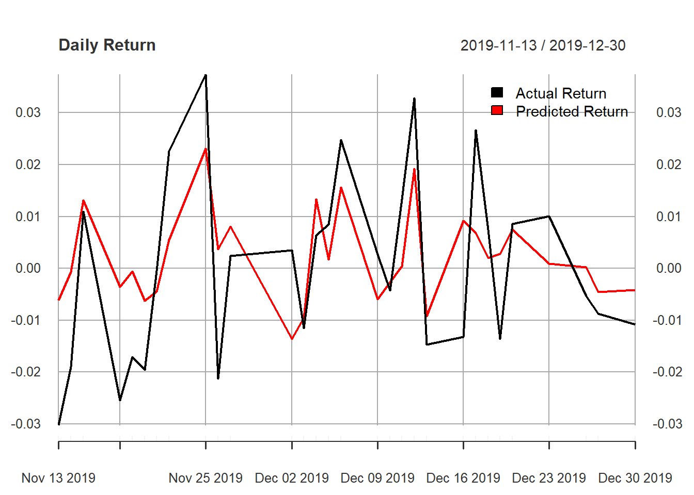

For this particular project, I will follow the Fama French model to see how much the market, SMB, and HML affect the returns of a stock. This will be conducted by using regression.
Fama French model.
Quantmod
Factors in Fama French: Risk Premium (Market Return - Risk free Rate), HML (Value Premium) (High - Low Book to Market Value), and SMB (Size Premium) (Small - Large Cap). All are returns. For simplicity, I will be using ETFs that follow specific strategies, such as only investing in large cap firms and S&P 500.
firm_symbol <- c("TEX") #Terex is considered to be mid cap, but quite close to small cap.
risk_premium_symbols <- c("SPY", "^TNX") #TNX = 10 Years Treasury Yield
HML_symbols <- c("VTV", "VUG") #VTV = Vanguard Value Index ETF AND VUG = Vanguard Growth Index ETF (Because Value stocks have higher B/M values than growth stocks)
SMB_symbols <- c("VB", "VV") #VB = Vanguard Small Cap Index ETF AND VV = Vanguard Large Cap Index ETF
combined <- c(firm_symbol, risk_premium_symbols, HML_symbols, SMB_symbols)
start.date <- "2017-01-01" #Date interval cannot be too large as the company might go from small to large cap and so on.
end.date <- "2019-12-31"
stocks <- getSymbols.yahoo(Symbols = combined,
env = .GlobalEnv,
return.class = "xts",
index.class = "Date",
from = start.date,
to = end.date,
periodicity = "daily")## Warning: ^TNX contains missing values. Some functions will not work if
## objects contain missing values in the middle of the series. Consider using
## na.omit(), na.approx(), na.fill(), etc to remove or replace them.## pausing 1 second between requests for more than 5 symbols
## pausing 1 second between requests for more than 5 symbols
## pausing 1 second between requests for more than 5 symbolslabel <- c("Terex", "MRP", "HML", "SMB")
risk.free.rate <- TNX$TNX.Adjusted/(100*250)#To convert risk free rate to decimals and daily return (assuming 250 trading days in a year.)
data <- cbind.xts(ROC(TEX$TEX.Adjusted)-risk.free.rate, #Want to remove risk free rate, so that we can compare fairly to the factors.
ROC(SPY$SPY.Adjusted)-risk.free.rate,
ROC(VTV$VTV.Adjusted)-ROC(VUG$VUG.Adjusted),
ROC(VB$VB.Adjusted)-ROC(VV$VV.Adjusted))
names(data) <- label
data <- na.omit(data)
head(round(data, 3))## Terex MRP HML SMB
## 2017-01-04 0.018 0.006 -0.003 0.010
## 2017-01-05 -0.028 -0.001 -0.006 -0.007
## 2017-01-06 -0.007 0.003 -0.007 -0.005
## 2017-01-09 -0.005 -0.003 -0.005 -0.003
## 2017-01-10 0.017 0.000 0.000 0.007
## 2017-01-11 0.007 0.003 0.003 0.000chart.CumReturns(data, legend.loc = "topleft", main = "Cumulative Return - Each Factor")All t-values are significant except for the intercept (alpha), justifying us to exclude it from any model.
training.data <- data[1:(nrow(data)-29)]
testing.data <- data[(nrow(data)-29):(nrow(data))] #Test for last 30 trading days in 2019.
regression <- lm(Terex ~ MRP + HML + SMB, data = training.data)
summary(regression) #These 3 factors can explain about 40% of variation in Terex Returns (Adjusted R-Square) and on average the predicted return is +1.7% away from actual value, which is quite significant when looking at stock returns. ##
## Call:
## lm(formula = Terex ~ MRP + HML + SMB, data = training.data)
##
## Residuals:
## Min 1Q Median 3Q Max
## -0.151679 -0.008415 0.000868 0.009706 0.074903
##
## Coefficients:
## Estimate Std. Error t value Pr(>|t|)
## (Intercept) -0.0003900 0.0006648 -0.587 0.558
## MRP 1.7289518 0.0881780 19.608 < 2e-16 ***
## HML 0.6794490 0.1572980 4.320 1.79e-05 ***
## SMB 1.5371570 0.1768356 8.693 < 2e-16 ***
## ---
## Signif. codes: 0 '***' 0.001 '**' 0.01 '*' 0.05 '.' 0.1 ' ' 1
##
## Residual standard error: 0.01771 on 711 degrees of freedom
## Multiple R-squared: 0.4087, Adjusted R-squared: 0.4062
## F-statistic: 163.8 on 3 and 711 DF, p-value: < 2.2e-16accuracy(regression)## ME RMSE MAE MPE MAPE
## Training set -6.599038e-20 0.01766081 0.01246183 33.80034 189.3361
## MASE
## Training set 0.7258859Test for last 31 trading days in 2019 of how well the model did.
predicted.returns <- (regression$coefficients[2]*testing.data$MRP + regression$coefficients[3]*testing.data$HML + regression$coefficients[4]*testing.data$SMB)
model.test <- cbind.xts(testing.data$Terex, predicted.returns)
names(model.test) <- c("Actual Return", "Predicted Return")
head(round(model.test,3))## Actual Return Predicted Return
## 2019-11-13 -0.030 -0.006
## 2019-11-14 -0.019 -0.001
## 2019-11-15 0.011 0.013
## 2019-11-18 -0.025 -0.004
## 2019-11-19 -0.017 -0.001
## 2019-11-20 -0.020 -0.006plot(model.test, legend.loc = "topright", main = "Daily Return")
We will lag all the indepdent variables by 1 day to see whether we can predict the TEX future stock return based on “old”/historical data. We expect a much worse outcome.
lagged.data <- cbind.xts(data$Terex, lag(data[,2:4]))
head(lagged.data)## Terex MRP HML SMB
## 2017-01-04 0.017590530 NA NA NA
## 2017-01-05 -0.027536561 0.0058334552 -0.0029048361 0.009727893
## 2017-01-06 -0.006757885 -0.0008896169 -0.0057541363 -0.007415638
## 2017-01-09 -0.004880706 0.0034747403 -0.0065927791 -0.005129353
## 2017-01-10 0.017340685 -0.0034012993 -0.0050970827 -0.002621108
## 2017-01-11 0.007107410 -0.0000951600 -0.0004574371 0.006806801lagged.data <- na.omit(lagged.data)
training.data <- lagged.data[1:(nrow(data)-29),]
testing.data <- lagged.data[(nrow(data)-29):(nrow(data)-1),] #Test for last 30 trading days in 2019. Also account for that 1 day that became NA at the end of data set.
regression <- lm(Terex ~ MRP + HML + SMB, data = training.data)
summary(regression) #The 3 factors lagged by 1 day can only explain about .6% of variation in Terex Returns (Adjusted R-Square) and on average the predicted return is +2.2% away from actual value, which is quite significant when looking at stock returns. This is obviously a bad model to be using in forecasting. Moreover, only HML has a high enough t-value so that we can reject the H0: Beta_HML = 0. In the forecasting, this will therefore be the only indepdendent variable we can use. ##
## Call:
## lm(formula = Terex ~ MRP + HML + SMB, data = training.data)
##
## Residuals:
## Min 1Q Median 3Q Max
## -0.138475 -0.012546 0.000965 0.013765 0.079516
##
## Coefficients:
## Estimate Std. Error t value Pr(>|t|)
## (Intercept) -5.486e-05 8.602e-04 -0.064 0.9492
## MRP 2.363e-02 1.141e-01 0.207 0.8360
## HML 5.207e-01 2.035e-01 2.558 0.0107 *
## SMB -1.165e-01 2.288e-01 -0.509 0.6108
## ---
## Signif. codes: 0 '***' 0.001 '**' 0.01 '*' 0.05 '.' 0.1 ' ' 1
##
## Residual standard error: 0.02291 on 711 degrees of freedom
## Multiple R-squared: 0.01032, Adjusted R-squared: 0.006145
## F-statistic: 2.472 on 3 and 711 DF, p-value: 0.06068accuracy(regression)## ME RMSE MAE MPE MAPE MASE
## Training set 1.359044e-19 0.02285005 0.01717961 105.6688 117.2949 1.000419predicted.returns <- (regression$coefficients[3]*testing.data$HML)
model.test <- cbind.xts(testing.data$Terex, predicted.returns)
names(model.test) <- c("Actual Return", "Predicted Return")
head(round(model.test,3))## Actual Return Predicted Return
## 2019-11-14 -0.019 -0.002
## 2019-11-15 0.011 -0.002
## 2019-11-18 -0.025 0.000
## 2019-11-19 -0.017 -0.001
## 2019-11-20 -0.020 -0.002
## 2019-11-21 0.000 0.000plot(model.test, legend.loc = "topright", main = "Daily Return")#Visually we can see that this is a very poor model.